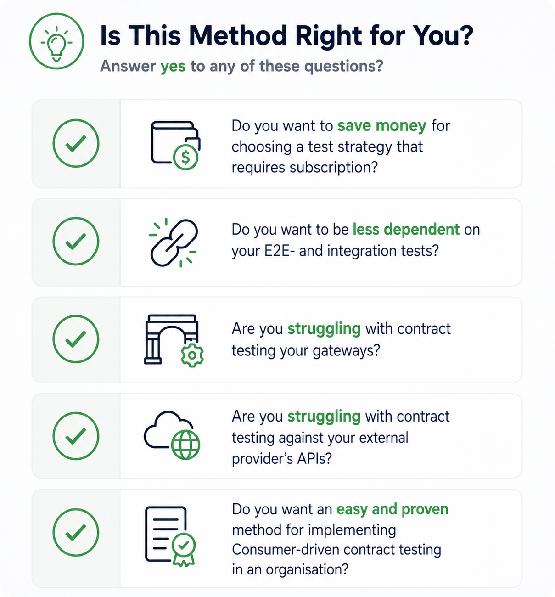

Consumer Driven Contract Testing - A CDCT method
This page serves the purpose of helping you determine if the method described in Consumer Driven Contract Testing - A CDCT method is relevant and suitable for your organisation. It provides a checklist to assess relevance, criteria for organisational fit, and guidance on when to use or avoid this method.

Is this method right for your organization?
This method is a good fit if most of the following apply:
- You are using or planning to use a microservices architecture
- You are a medium to large organization with multiple teams
- You are using container-based infrastructure (e.g., Docker, Kubernetes)
- You have the resources to introduce and maintain a new testing strategy
If several of these do not apply:
- For monolithic systems → use traditional testing approaches
- For small teams or simple systems → use Pact without additional extensions
- For non-containerized environments → evaluate standard Pact capabilities first
- If resources are limited → avoid introducing a new testing strategy at this time
Additionally, you should have the following prerequisite knowledge to effectively implement this method:
When should you use this method?
You should consider this method if your organisation experiences one or more of the following:
- You rely heavily on slow or unstable E2E and integration tests
- You want faster feedback in your CI/CD pipeline
- You have multiple services communicating through APIs
- You struggle with contracts across gateways
- You depend on external APIs and want safer validation
- You want a structured way to adopt CDCT
When should you NOT use this method?
- Your system is a monolith with little service interaction
- Your system has low complexity
- Your current testing setup already works well
- You lack resources to maintain a new testing approach
What type of organisation is this for?
- Microservice-based organisations
- Teams working on independent services
- CI/CD-driven environments with API communication
- Smaller teams or simple systems can often use CDCT directly with tools like Pact without additional structure